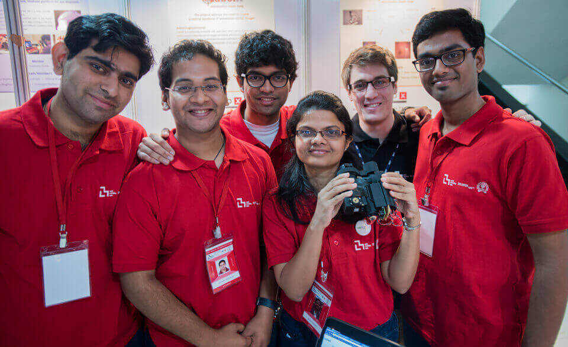

Building iLabelIT

The ReD-X Mumbai 2015 was a boot camp held at IIT-Bombay for 7 days in association with MIT Media Labs and Welingkar Institute of Management Development & Research. Many engineers, designers, doctors, architects from all over India were a part of this 7-day hackathon with a mutual goal in mind of creating something cool that matters. We were building a new web platform for retinal annotation that soon would end up becoming iLabelIT.
A team of 4 hackers,1 doc, and one super-cool mentor had one goal – to simplify the process of annotating retinal images. A lot of brainstorming and discussion went in order to achieve a simplified UI. The panel presentations helped us to fill the holes in our ‘project in development’, taking that advice seriously and improving day by day we learned a lot of during the process.

The prototype web app was built on REST layer consisting of MongoDB, Express Js, Angular Js, and Node Js (MEAN). This became our prototyping stack since it's faster than traditional client-server application. By the end of the hackathon, we had built a working prototype that allowed annotation of retinal images and successfully creating an operational REST layer and APIs.
During these 7 days, we learned a lot. Apart from just the technical part of the workshop, we learned to work together in a team and work in cooperation with doctors. During our visit to Hinduja hospital, we got an opportunity to interact with Optometrists and understand how they work in the clinics. We also made new connections and got to interact and share ideas with many people.
iLabelIT's development was continued in Hyderabad and we shifted to a completely new stack for creating a scalable and sustainable platform. You can check out my work on iLabelIT here.
For more information about my experience at the hackathon, check out the blog post of MIT ReD-X Camp - 2015.